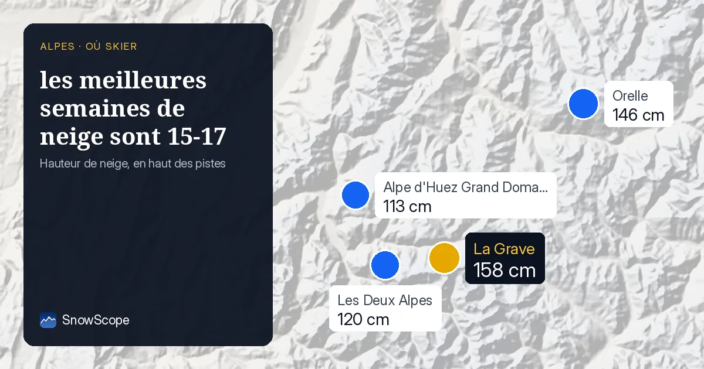
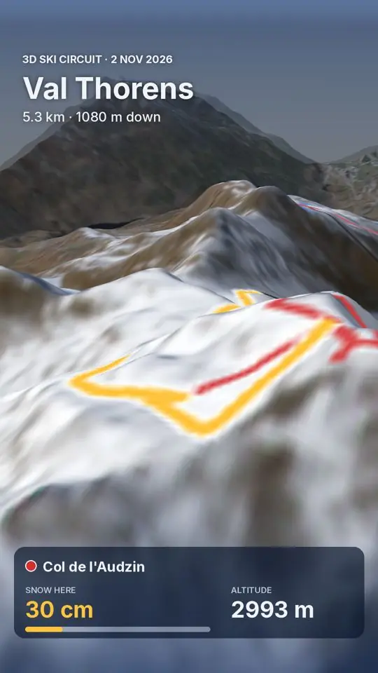
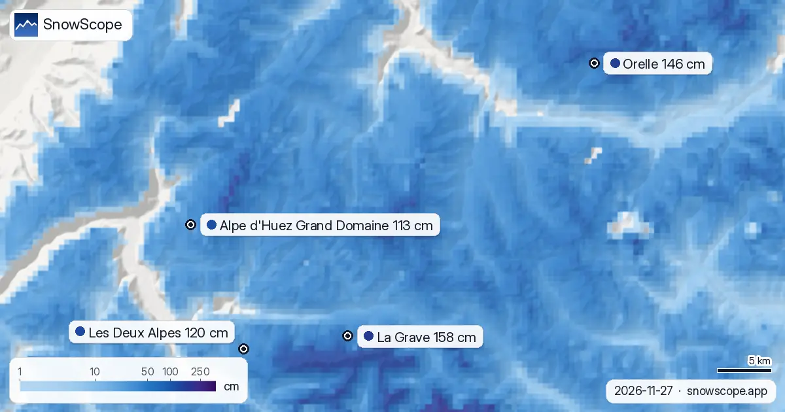

La Grave en tête des Alpes françaises avec 158 cm : les meilleures semaines de neige sont 15-17
La Grave conserve le plus gros manteau neigeux des Alpes françaises ce week-end avec 158 cm en versants supérieurs, bien devant Orelle (146 cm) et l'Alpe d'Huez (113 cm). L'eau stockée dans cette neige s'accumule tôt : historiquement, les semaines les plus riches en neige à La Grave se situent entre mi-avril et fin avril, semaines 15 à 17.
Consultez les prévisions neige en temps réel pour La Grave sur l'application SnowScopeHauteurs de neige, alertes poudreuse et carte 3D, gratuitement.
Où la neige s'amoncelle le plus actuellement
Les versants supérieurs de La Grave accumulent 158 cm de neige en ce vendredi 27 novembre. Cette épaisseur reflète deux semaines d'accumulation : 38 cm sont tombés le 25 novembre, puis 6 cm le 26. Le manteau neigeux à mi-pente (3 369 m) atteint 138 cm, tandis qu'à la base (3 196 m) il totalise 130 cm. Orelle arrive en deuxième position avec 146 cm au sommet, alimentée par 24 cm de neige en trois jours. L'Alpe d'Huez et Les Deux Alpes traînent avec respectivement 113 cm et 120 cm.
Ces épaisseurs de début de saison importent pour l'approvisionnement en eau. À La Grave, la neige à mi-pente dépasse déjà 2,8 fois l'épaisseur habituelle pour fin novembre (généralement 50 cm à cette altitude). La teneur en eau reste faible pour l'instant, mais la neige de novembre repose souvent sur le sol dénudé et se transforme en écoulement printanier. La neige à mi-pente d'Orelle (67 cm) surpasse sa moyenne de novembre (53 cm), suggérant que l'hiver alimente les réserves des Alpes centrales plus vite que d'habitude.
| Station | Hauteur de neige | Neige fraîche, 72 h | Attendu, jours suivants | Sommet |
|---|---|---|---|---|
| La Grave | 158 cm | 44 cm | 4 cm | 3 543 m |
| Orelle | 146 cm | 24 cm | 1 cm | 3 221 m |
| Alpe d'Huez Grand Domaine | 113 cm | 45 cm | 2 cm | 3 306 m |
| Les Deux Alpes | 120 cm | 36 cm | 2 cm | 3 511 m |

Quand arrive le pic de neige à La Grave
Les semaines les plus riches en neige à La Grave se situent historiquement aux semaines 15, 16 et 17—soit de mi-avril à fin avril. Actuellement, en semaine 48, la station ne possède que 54 pour cent de son épaisseur typique de fin novembre. C'est normal pour le début de saison. Les 158 cm que vous voyez aujourd'hui s'épaississent à mesure que l'hiver progresse, mais la question pour le système hydrique est de savoir si les fontes d'avril seront rapides ou progressives.
En contraste, l'Alpe d'Huez se situe 8 cm au-dessus de la moyenne à mi-pente pour cette date (41 cm mesurés, 33 cm normalement), et Orelle devance sa moyenne habituelle de 53 cm de 15 cm. Ces stations constituent une réserve d'eau précoce. Si le cycle gel-dégel reste stable tout l'hiver—suffisamment froid pour préserver la couche de base—cet avantage précoce pourrait signifier un écoulement printanier plus important et des réservoirs plus pleins en aval dans le bassin du Rhône.

À quoi vous attendre ce week-end
Samedi et dimanche apportent peu de neige nouvelle à ces stations. La Grave pourrait voir 1 cm dimanche ; Orelle et l'Alpe d'Huez en verront moins. Le niveau de congélation monte les deux jours, atteignant 3 210 m à La Grave samedi et 3 280 m dimanche. Cela signifie de la neige mouillée aux altitudes élevées en milieu de journée, mais la couche de base devrait rester gelée la nuit. Le danger d'avalanche est classé 3 (considérable) sur les quatre stations—consultez le bulletin BERA de Météo-France avant de skier hors-piste.
En versants supérieurs et sur les terrains exposés nord, la neige persistera longest. À la base de La Grave (3 196 m), qui reste à l'ombre la majeure partie de la journée fin novembre, le manteau de 130 cm devrait rester stable. Plus bas—aux altitudes de mi-pente autour de 2 000-2 400 m—la neige s'amincira et deviendra parcimonieuse. L'épaisseur de début de saison est mince selon les normes hivernales, donc rester sur les pistes balisées et les terrains officiels est plus sûr que de chercher de la neige vierge.
Stockage d'eau et saison à venir
Les 72 dernières heures ont ajouté une eau considérable aux Alpes hautes. La Grave a gagné 44 cm, l'Alpe d'Huez 45 cm, et Les Deux Alpes 36 cm. À ces altitudes élevées, presque toute cette neige survivra jusqu'au printemps comme glacier et champ de neige permanent. L'eau bloquée maintenant contribue au ruissellement estival pour les usines hydroélectriques et les vallées fluviales en aval.
Pour les skieurs, cela importe : les versants hauts profonds signifient des saisons de ski longues. Pour les hydrologues, cela signifie une confiance précoce dans l'approvisionnement en eau printanière. La question est de savoir si cette vague de novembre se répète ou stagne en décembre et janvier. Si elle stagne, les réservoirs seront modérés. Si l'accumulation continue, 2027 pourrait voir des réservoirs très pleins en avril.
Préparer votre week-end
La Grave est votre meilleur choix pour de la neige protégée à haute altitude ce week-end, avec 158 cm en versants supérieurs et un temps calme. L'altitude de base se situe à 3 196 m—bien au-dessus du niveau de congélation—la neige devrait donc rester sèche toute la journée. Orelle offre une protection similaire et une profondeur de mi-pente légèrement meilleure (67 cm à 2 779 m), mais vérifiez les horaires des remontées avant de partir.
Les stations plus basses comme l'Alpe d'Huez et Les Deux Alpes auront une neige plus fine à leurs altitudes de mi-pente et des conditions molles samedi. Si vous skiez là, commencez tôt sur les pentes exposées nord et descendez rapidement quand le soleil réchauffe le niveau de congélation vers midi. Les quatre stations conseillent de vérifier leurs sites internet pour les opérations des remontées ; le début de saison signifie des horaires de remontées réduits.
Conseils aux skieurs
- Skiez les versants supérieurs et terrains exposés nord de La Grave ce week-end pour le manteau neigeux le plus stable et le plus durable.
- Commencez tôt samedi ; le niveau de congélation monte à 3 210 m, la neige se ramollira donc avant mi-matin au-dessous de cette altitude.
- À l'Alpe d'Huez et Les Deux Alpes, évitez les altitudes inférieures et les pentes exposées sud où la neige fait moins de 10 cm et peut exposer les rochers.
- Consultez le bulletin d'avalanche BERA de Météo-France avant de quitter la piste ; le danger est classé 3 (considérable) sur toutes les stations.
- Vérifiez les sites des stations pour les horaires d'ouverture des remontées et la disponibilité des terrains ; les horaires de début de saison varient énormément.
À propos de ces chiffres
Les hauteurs de neige des stations sont la neige la plus épaisse sur le haut du domaine à la date indiquée ; ce sont des estimations pour une zone, pas une mesure en un point. Les prévisions peuvent changer. Consultez toujours le bulletin d'avalanche officiel avant le hors-piste.
Bulletins d'avalanche officiels: Météo-France BERA
Citer ce bulletin
Pour la recherche, l'enseignement ou la presse : chiffres et graphiques réutilisables librement sous CC BY 4.0 avec cette citation.
SnowScope (2026), La Grave en tête des Alpes françaises avec 158 cm : les meilleures semaines de neige sont 15-17, https://snowscope.app/blog/fr/2026/11/alps-where-to-ski-this-weekend-27-november-2026.html, consulté le 2026-11-27
SnowScope (Atlas Labs). (2026, November 27). La Grave en tête des Alpes françaises avec 158 cm : les meilleures semaines de neige sont 15-17. SnowScope snow reports. https://snowscope.app/blog/fr/2026/11/alps-where-to-ski-this-weekend-27-november-2026.html
BibTeX
@misc{snowscope2026alpswheretoskithisweeken,
author = {{SnowScope (Atlas Labs)}},
title = {La Grave en tête des Alpes françaises avec 158 cm : les meilleures semaines de neige sont 15-17},
year = {2026},
month = nov,
howpublished = {\url{https://snowscope.app/blog/fr/2026/11/alps-where-to-ski-this-weekend-27-november-2026.html}},
note = {Published 2026-11-27 10:35 UTC; accessed 2026-11-27}
}· CC BY 4.0 · Méthodes, données et outils →
La Grave : neige et température selon l'altitude, cet hiver vs l'hiver dernier (outils) →
Suivre La Grave
Gratuit : un message quand la neige arrive, et la météo chaque matin.